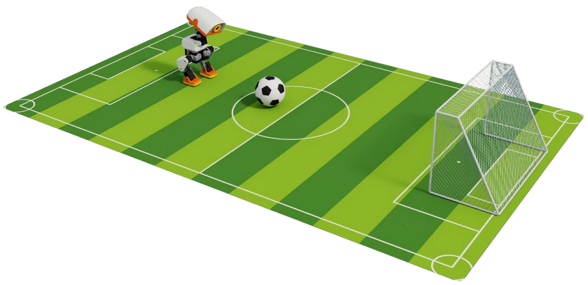

1.1 Teach Microduck to score a goal#
Experience Microduck's motion, train skills with reinforcement learning, then adapt GR00T with demonstrations, evaluate the walking-shot task in simulation and consider how to carry it to more environments.

What you will build#
The whole course follows one Microduck, one green football pitch, one ball and one goal: meet the robot and try its motion skills, train walking and slope adaptation with reinforcement learning and domain randomization, then adapt GR00T with demonstrations, evaluate its walking shot in simulation and consider how to adapt to more environments. Every lab runs in the same course container.
Overview and container setup
Meet Microduck
Train skills with reinforcement learning
Train GR00T to complete tasks
Reference and help
By the end, you can#
Explain mechanisms, actuators, observations, actions and rewards.
Run fixed policies, PPO training and domain-randomization experiments with Isaac Lab, Newton and Isaac Sim in the course container.
Distinguish what an onboard policy and VLA action prediction are each responsible for.
Explain GR00T's 8-D high-level request interface, demonstration data design and action-head training, and validate a trained checkpoint.
Design environment variation and held-out evaluation; tell apart a working pipeline, better model metrics and complete task success.
Course route#
Part |
Sections |
|---|---|
1 Overview |
1.1 Teach Microduck to score a goal · 1.2 How to take this course · 1.3 Set up the environment and get the code |
2 Meet Microduck |
2.1 Meet Microduck: play football first · 2.2 Mechanism and control timing |
3 Teach Microduck skills with reinforcement learning |
3.1 Reinforcement learning and PPO · 3.2 Domain randomization: train and test a walking policy · 3.3 Reward design: walking steadily up and down slopes · 3.4 Community skills: from goal to reward |
4 Train GR00T to complete tasks autonomously |
4.1 Vision-language-action models and GR00T · 4.2 Walking shot: GR00T inputs, outputs and data · 4.3 Train and validate the GR00T walking shot · 4.4 From the pitch to more environments |
5 Reference and help |
5.1 Models and data · 5.2 Troubleshooting · 5.3 Further learning and references |